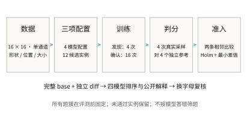
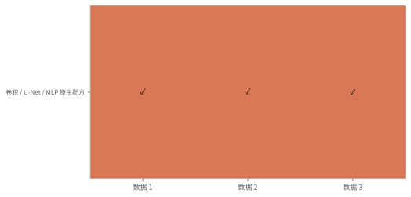
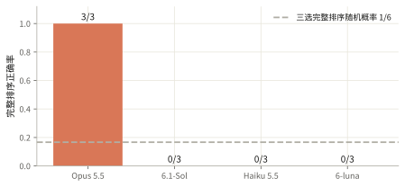

生成补充：3道算子配方题，Opus全部排对
卷积→单层级U-Net→全连接网络的顺序，在3个新数据实例上均通过独立确认。Opus答对3/3；其余三模型均答对0/3，主要错在把U-Net排在卷积前。这是同一题簇的三个实例，不能据此给模型能力作总体排名。
- 数据 受控合成图像
- 题型 三选完整排序
- 训练重复 4 次发现 + 16 次确认
- 计算 360-1 / ophis
给定形状条件，学习随机亮度和纹理

1个题簇×3个新数据种子，共3组三选排序；去重后3个数据集、12个训练配置、4个模型配置。三选为卷积、单层级U-Net和全连接网络，另保留图块注意力诊断；全部使用绝对坐标、相同扩散目标、3000训练步与16反向采样步。完整保留四配置的六组两两对照。4个新训练种子只确定方向，再用16个新种子做配对符号检验；6个相邻假设组成独立Holm检验族，仍要求评分均差至少0.003。题面共享基准代码，各改动独立还原。
排序使用真实采样的 energy score（能量评分）：比较生成图像与独立参考图像的距离，并扣除生成样本之间的距离项。越低越好。四个生成样本和四个参考样本提供有限蒙特卡洛估计。条件形状成功率和多样性另列，不能互相替代。预测目标包括干净图像 x₀、噪声 ε，以及二者的线性组合 v；它们的去噪损失不能直接跨目标比较。图中的 U-Net 是带跳跃连接的单层级下采样与上采样网络。采样使用 DDIM，评分依据 严格适当评分规则。
固定新数据种子852001、训练种子240，展示条件0—7的首张图，以及条件0、1的全部4次生成。图片来自同一组预指定模型文件，未挑选外观；统计使用16次训练。评分同时考虑与独立参考图的距离和条件内变化，越低越好。前三个配置通过独立CPU重采样；注意力诊断的CPU像素差略超原阈值，原GPU独立复算与存档完全一致，保留跨设备限制。


未通过确认的题目也保留在覆盖图中
发现阶段只用验证集固定顺序。确认阶段使用独立的 16 个训练 seed，对两条相邻比较做单侧配对符号检验。Holm 校正覆盖本批全部 6 条冻结假设，校正 p ≤ 0.05，且平均差值至少 0.003。分类首批、分类补充批和生成批分别定义检验族；未声称跨批联合错误率仍为 5%。它检验训练 seed 上差异方向的稳定性，不是期望均值差的显著性检验。

全部相邻差值与拒绝原因
| 实例 | 平均差值 | 校正 p | 通过 |
|---|---|---|---|
| 卷积 / U-Net / MLP 原生配方 · 852001 | 0.012572 | 9.1553e-05 | 是 |
| 卷积 / U-Net / MLP 原生配方 · 852001 | 0.010632 | 9.1553e-05 | 是 |
| 卷积 / U-Net / MLP 原生配方 · 852002 | 0.012191 | 9.1553e-05 | 是 |
| 卷积 / U-Net / MLP 原生配方 · 852002 | 0.01038 | 9.1553e-05 | 是 |
| 卷积 / U-Net / MLP 原生配方 · 852003 | 0.011806 | 9.1553e-05 | 是 |
| 卷积 / U-Net / MLP 原生配方 · 852003 | 0.012894 | 9.1553e-05 | 是 |
完整排序和换字母后的稳定性分开计算
所有通过确认的题都进入四模型评测。重复数据实例和字母置换不是独立新题，下面不报告独立二项置信区间。API 缺失单列；单轮内已返回的错误或格式失败不会重抽。

本批一直输出最常见字母顺序可得 33.3%。这是准入后标签分布的事后描述，不能与事先固定的随机基线混同。
| 模型 | 主问题完成 | 已有回答模板宏平均 | 可解析回答的两两一致度 | 换字母：一致 / 有效配对 |
|---|---|---|---|---|
| Opus 5.5 | 3/3 | 100.0%（1/1 簇） | 100.0%（3 题） | 3/3 |
| 6.1-Sol | 3/3 | 0.0%（1/1 簇） | 66.7%（3 题） | 3/3 |
| Haiku 5.5 | 3/3 | 0.0%（1/1 簇） | 66.7%（3 题） | 3/3 |
| 6-luna | 3/3 | 0.0%（1/1 簇） | 66.7%（3 题） | 2/2 |
四模型均完成3道主问题。Opus答对3/3；6.1-Sol、Haiku、6-luna均答对0/3。后三者识别了全连接网络的空间共享劣势，却普遍依赖“更大上下文加跳连更好”的先验，把U-Net排在卷积前。11条已完成的字母置换回答均保持原来的物理配置排序；Luna一条置换回答无输出，单列缺失。随机完整排序基线为1/6；三个实例仍来自同一簇，不当作三种独立机制。
预先固定的表面规则
{
"more_parameters": {
"admitted": 3,
"ordered": 3,
"tie": 0,
"not_applicable": 0,
"correct": 0,
"comparable_pairs": 9,
"correct_pairs": 0,
"accuracy_when_ordered": 0.0,
"accuracy_on_comparable_pairs": 0.0
},
"more_training_steps": {
"admitted": 3,
"ordered": 0,
"tie": 3,
"not_applicable": 0,
"correct": 0,
"comparable_pairs": 0,
"correct_pairs": 0,
"accuracy_when_ordered": null,
"accuracy_on_comparable_pairs": null
},
"more_sampling_steps": {
"admitted": 3,
"ordered": 0,
"tie": 3,
"not_applicable": 0,
"correct": 0,
"comparable_pairs": 0,
"correct_pairs": 0,
"accuracy_when_ordered": null,
"accuracy_on_comparable_pairs": null
}
}正确排序和可靠解释需要分别核验
23条公开解释已逐条审核。Opus抓住了实际代码差异：U-Net全部非线性卷积块在8×8上运算，恢复到16×16后只有线性卷积，输入跳连也只经过线性卷积；这个判断比按架构名称预测更具体。它仍有事实误读，包括若干次将全连接输入写为11或14通道，实际为17；首题还漏掉纹理潜变量。线性读出能组合非线性特征，不能据此断言精确边界无法表达；没有空间共享也不等于必须逐位置记忆。其余模型多次承认上下采样可能损失细节，但没有把这条实现特征放在主要位置。正确排序与可靠机制需要分别核验。
| 模型 | 代码事实支持 | 关键因素支持 | 因果表述不成立 |
|---|---|---|---|
| Opus 5.5 | 1/3 | 0/3 | 0/3 |
| 6.1-Sol | 3/3 | 0/3 | 0/3 |
| Haiku 5.5 | 1/3 | 0/3 | 0/3 |
| 6-luna | 3/3 | 0/3 | 0/3 |
解释评分由本次研究 agent 按冻结标准逐条核查，是可复核的定性判断，不是多位专家独立评审的一致意见。这里只统计主问题的公开回答；部分支持、无法判断另存审核记录。关键因素得到局部对照支持，不代表证明了唯一内部机制。下方可逐题检查原话、证据和判断。
三项完整配置和测试分布
实际发送的完整题面
完整局部对照：改变什么，测试指标如何变化
这些对照用于描述和核验解释，不是新增的显著性筛选。多字段变化不能归因为其中一个字段；单字段干预也不证明唯一内部机制。测试指标越低越好。
公开解释审核
出题时预先定义的解释目标
共享完整代码保留可还原性
每个 choice 的 diff 都独立相对同一 base，训练、优化器和所有配置改动都显式呈现。自动重建最终完整代码，差异过大时显示完整文件。
本批主问题相对逐选项完整代码，UTF-8 总字节减少 50.0%。逐题范围 50.0%–50.0%。这是字节压缩率，不是 token 压缩率。
结论适用范围
- 新增3题来自同一个题簇的三个数据实例，不能当成三种独立任务机制。只因原始发现验证指标而选择，未按确认测试或模型错题挑选。
- 这是原生配置整体比较，同时改变参数量、归一化和连接。卷积19489、U-Net35089、全连接461344、注意力17908个参数；不能把差异纯归因于算子名称或参数量。
- 均为16×16程序图像，不能推断自然图像质量。每条件仅4张生成图和4张独立参考，显著性只描述固定数据及评价噪声下训练种子稳定性。
- 相同轮廓可伴随亮度/纹理均值化，方差过高也可能是噪声；近乎完全常量的塌缩标志为0不等于分布多样性充分。
- 三个数据实例中所有配置的平均评分均未优于独立16次抽样估计的条件均值基线；可学习和可区分不等于已经完整拟合随机图像分布。
- 注意力模型的CPU最大像素差0.001063略超0.001，能量分数差仅0.00000622；事后原GPU复算误差为0。初次失败和原阈值完整保留，未把GPU通过改写为CPU通过。
- 三道题属于同一算子配方簇，模型表现只是这三个固定实例上的描述。字母置换保持顺序不代表正确，也不能估计总体位置偏差。